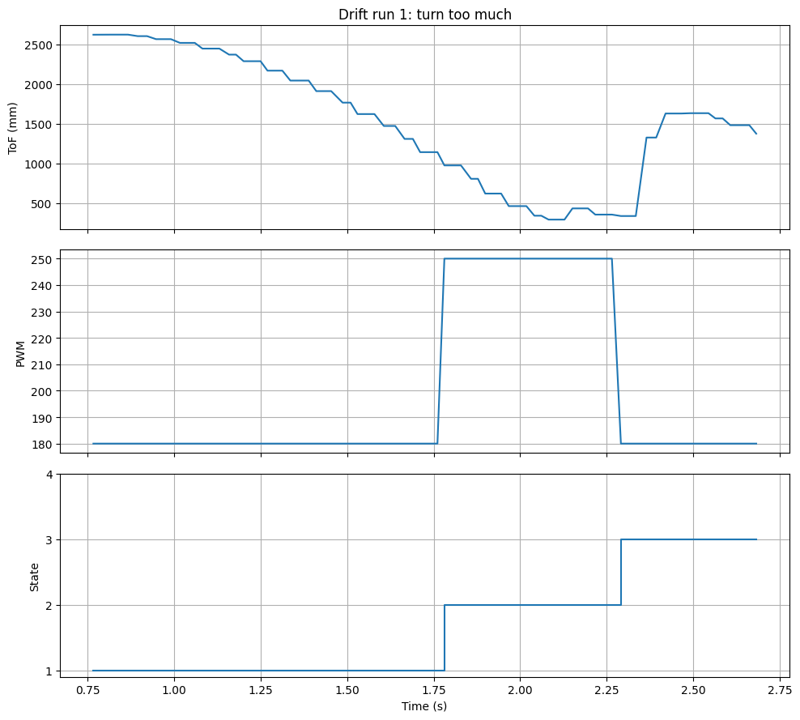
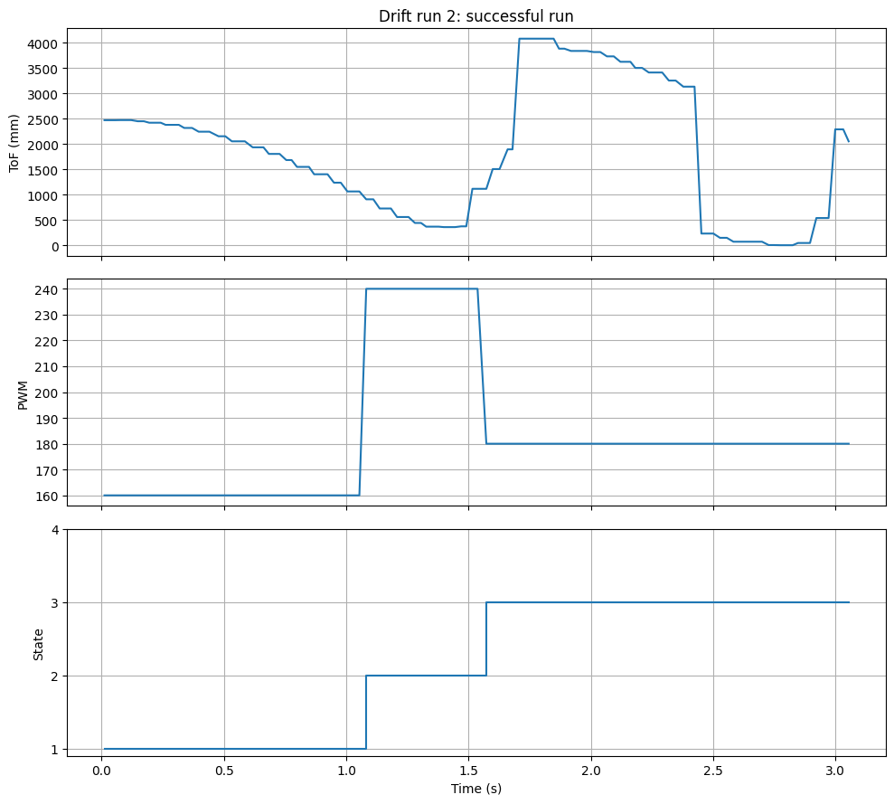

Hetao Yin (Hubery) — ECE 5160 Fast Robots
For Lab 8, I chose Task B: Drift. The goal was to drive the robot quickly toward the wall and, once the robot was within the required distance threshold, initiate a fast 180-degree turn and return back across the starting line. Instead of adding a Kalman Filter for this lab, I used a simpler approach based on a tuned ToF threshold and a fixed-time turn. This matched the lab well because the drift task only required the turn to be triggered near the wall, and manual tuning of the trigger distance was allowed.
My implementation used the same BLE framework as the previous labs so that I could tune the run directly from Jupyter. The robot continuously updated the ToF reading in the background, and once the measured distance was below the tuned threshold, it switched from forward driving into a fixed-duration spin. After the turn finished, the robot drove back for a fixed amount of time. The overall logic was a simple state machine with three active states: DRIVE_TO_WALL, DRIFT_TURN, and DRIVE_BACK.
Because my two wheels did not produce exactly the same speed, I also added separate left/right scaling factors. This helped the car track straighter during the approach and made the turn more repeatable. The final successful run used a threshold near 1140 mm, forward_pwm = 160, turn_pwm = 240, turn_time = 480 ms, and back_pwm = 180.
The ToF sensor was updated in the background so that BLE handling and motion control could continue while the sensor was waiting for a fresh measurement. The newest valid distance was stored in last_tof_mm.
static inline void update_tof_nonblocking() {
if (!tof_ok) return;
enum { TOF_IDLE, TOF_WAIT_READY };
static int state = TOF_IDLE;
static unsigned long last_kick_ms = 0;
static unsigned long wait_start_ms = 0;
const unsigned long KICK_MS = 60;
const unsigned long READY_TIMEOUT_MS = 200;
unsigned long now = millis();
if (state == TOF_IDLE) {
if (now - last_kick_ms >= KICK_MS) {
last_kick_ms = now;
distanceSensor.startRanging();
wait_start_ms = now;
state = TOF_WAIT_READY;
}
return;
}
if (distanceSensor.checkForDataReady()) {
int d = distanceSensor.getDistance();
distanceSensor.clearInterrupt();
distanceSensor.stopRanging();
if (d > 0 && d < 6000) {
last_tof_mm = d;
tof_fresh = true;
}
state = TOF_IDLE;
} else if (now - wait_start_ms > READY_TIMEOUT_MS) {
distanceSensor.stopRanging();
state = TOF_IDLE;
}
}I used separate wheel commands so I could both drive straight and spin in place. The right wheel needed a larger scale factor than the left wheel, so I compensated for that in software.
const float LEFT_SCALE = 1.00f;
const float RIGHT_SCALE = 1.15f;
void set_motor_lr(int left_cmd, int right_cmd) {
current_left_cmd = constrain(left_cmd, -255, 255);
current_right_cmd = constrain(right_cmd, -255, 255);
int left_out = constrain((int)(LEFT_SCALE * current_left_cmd), -255, 255);
int right_out = constrain((int)(RIGHT_SCALE * current_right_cmd), -255, 255);
apply_one_motor(L1, L2, left_out);
apply_one_motor(R1, R2, right_out);
}
void drive_forward(int pwm) {
pwm = constrain(pwm, 0, 255);
set_motor_lr(pwm, pwm);
}
void spin_in_place(int pwm, int dir) {
pwm = constrain(pwm, 0, 255);
if (dir >= 0) {
set_motor_lr(pwm, -pwm);
} else {
set_motor_lr(-pwm, pwm);
}
}The main control loop used a state machine. In the approach phase, the robot waited until the ToF reading crossed the tuned threshold. It then entered the drift turn for a fixed amount of time and finally drove back.
void update_drift() {
if (!drift_running) return;
unsigned long now = millis();
int tof = read_tof_mm();
bool got_new_tof = consume_tof_fresh_flag();
if (now - drift_start_ms > max_total_ms) {
ble_send_line("DRIFT_TIMEOUT\n");
stop_drift_run();
return;
}
switch (drift_state) {
case DRIVE_TO_WALL: {
drive_forward(forward_pwm);
if (got_new_tof && tof > 0 && tof < 6000) {
if (tof <= trigger_mm) {
trigger_hits++;
} else {
trigger_hits = 0;
}
if (trigger_hits >= TRIGGER_HITS_N) {
drift_state = DRIFT_TURN;
state_start_ms = now;
trigger_hits = 0;
spin_in_place(turn_pwm, turn_dir);
}
}
break;
}
case DRIFT_TURN: {
spin_in_place(turn_pwm, turn_dir);
if (now - state_start_ms >= turn_time_ms) {
drift_state = DRIVE_BACK;
state_start_ms = now;
drive_forward(back_pwm);
}
break;
}
case DRIVE_BACK: {
drive_forward(back_pwm);
if (now - state_start_ms >= back_time_ms) {
stop_drift_run();
}
break;
}
default: {
stop_motors();
break;
}
}
maybe_log_drift();
}I exposed BLE commands so that I could change the drift parameters without recompiling every time. This made tuning much faster.
ble.send_command(CMD.SET_DRIFT_PARAMS, "1140|160|240|480|180|1500|1")
ble.send_command(CMD.START_DRIFT, "")
In this run, the robot correctly detected the wall and entered the drift state, but the turn was slightly too aggressive, so the car rotated more than intended before driving back. This run was useful because it showed that the trigger logic was working, but the turn timing still needed tuning.

This run satisfied the lab requirement. The robot approached the wall, triggered the drift at the tuned distance, completed the fixed-time turn, and then drove back successfully. In the return phase of this plot, the ToF trace shows a sudden drop followed by a sudden increase. That was caused by my hand temporarily blocking the robot to prevent it from hitting the wall. Because this happened after the drift maneuver was already completed, I treat those points as a measurement artifact from manual safety intervention rather than a failure of the controller.
The most important part of this lab was tuning. I first verified wheel direction and straight-line behavior, then tuned the threshold distance, turn PWM, and turn duration. The over-rotation run was useful because it showed how sensitive the final heading was to turn timing. Overall, the final fixed-threshold and fixed-time approach was simple, fast to tune, and reliable enough to complete the stunt repeatedly.
In this lab, I used AI mainly to help organize the report structure, summarize debugging ideas, and refine how I explained the implementation and results.